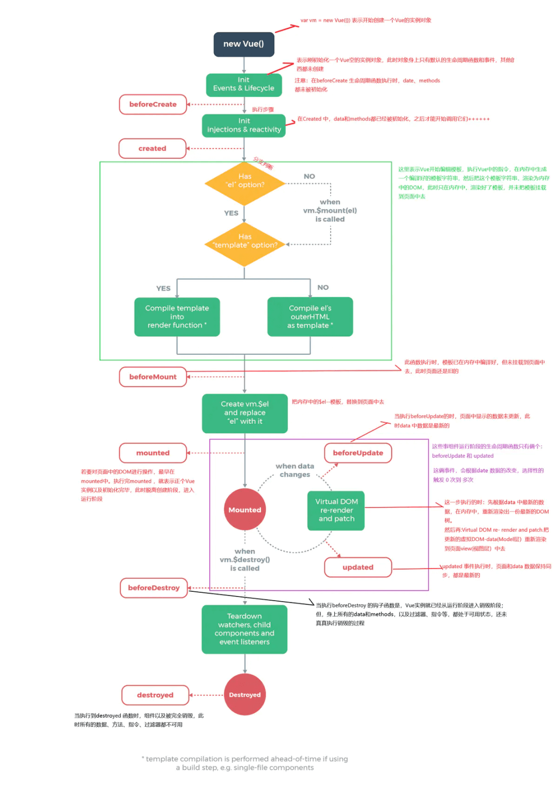

说说你对Vue生命周期的理解
参考答案
一、生命周期是什么
生命周期（Life Cycle）的概念应用很广泛，特别是在政治、经济、环境、技术、社会等诸多领域经常出现，其基本涵义可以通俗地理解为“从摇篮到坟墓”（Cradle-to-Grave）的整个过程在Vue中实例从创建到销毁的过程就是生命周期，即指从创建、初始化数据、编译模板、挂载Dom→渲染、更新→渲染、卸载等一系列过程我们可以把组件比喻成工厂里面的一条流水线，每个工人（生命周期）站在各自的岗位，当任务流转到工人身边的时候，工人就开始工作PS：在Vue生命周期钩子会自动绑定 this 上下文到实例中，因此你可以访问数据，对 property 和方法进行运算这意味着你不能使用箭头函数来定义一个生命周期方法 \(例如 created: () => this.fetchTodos()\)
二、生命周期有哪些
Vue生命周期总共可以分为8个阶段：创建前后, 载入前后,更新前后,销毁前销毁后，以及一些特殊场景的生命周期
| 生命周期 | 描述 |
|---|---|
| :-- | :-- |
| beforeCreate | 组件实例被创建之初 |
| created | 组件实例已经完全创建 |
| beforeMount | 组件挂载之前 |
| mounted | 组件挂载到实例上去之后 |
| beforeUpdate | 组件数据发生变化，更新之前 |
| updated | 数据数据更新之后 |
| beforeDestroy | 组件实例销毁之前 |
| destroyed | 组件实例销毁之后 |
| activated | keep-alive 缓存的组件激活时 |
| deactivated | keep-alive 缓存的组件停用时调用 |
| errorCaptured | 捕获一个来自子孙组件的错误时被调用 |
三、生命周期整体流程
Vue生命周期流程图

具体分析
beforeCreate -> created
- 初始化
vue实例，进行数据观测
created
- 完成数据观测，属性与方法的运算，
watch、event事件回调的配置 - 可调用
methods中的方法，访问和修改data数据触发响应式渲染dom，可通过computed和watch完成数据计算 - 此时
vm.$el并没有被创建
created -> beforeMount
- 判断是否存在
el选项，若不存在则停止编译，直到调用vm.$mount(el)才会继续编译 - 优先级：
render>template>outerHTML vm.el获取到的是挂载DOM的
beforeMount
- 在此阶段可获取到
vm.el - 此阶段
vm.el虽已完成DOM初始化，但并未挂载在el选项上
beforeMount -> mounted
- 此阶段
vm.el完成挂载，vm.$el生成的DOM替换了el选项所对应的DOM
mounted
vm.el已完成DOM的挂载与渲染，此刻打印vm.$el，发现之前的挂载点及内容已被替换成新的DOM
beforeUpdate
- 更新的数据必须是被渲染在模板上的（
el、template、render之一） - 此时
view层还未更新 - 若在
beforeUpdate中再次修改数据，不会再次触发更新方法
updated
- 完成
view层的更新 - 若在
updated中再次修改数据，会再次触发更新方法（beforeUpdate、updated）
beforeDestroy
- 实例被销毁前调用，此时实例属性与方法仍可访问
destroyed
- 完全销毁一个实例。可清理它与其它实例的连接，解绑它的全部指令及事件监听器
- 并不能清除DOM，仅仅销毁实例
使用场景分析
| 生命周期 | 描述 |
|---|---|
| :-- | :-- |
| beforeCreate | 执行时组件实例还未创建，通常用于插件开发中执行一些初始化任务 |
| created | 组件初始化完毕，各种数据可以使用，常用于异步数据获取 |
| beforeMount | 未执行渲染、更新，dom未创建 |
| mounted | 初始化结束，dom已创建，可用于获取访问数据和dom元素 |
| beforeUpdate | 更新前，可用于获取更新前各种状态 |
| updated | 更新后，所有状态已是最新 |
| beforeDestroy | 销毁前，可用于一些定时器或订阅的取消 |
| destroyed | 组件已销毁，作用同上 |
四、题外话：数据请求在created和mouted的区别
created是在组件实例一旦创建完成的时候立刻调用，这时候页面dom节点并未生成mounted是在页面dom节点渲染完毕之后就立刻执行的触发时机上created是比mounted要更早的两者相同点：都能拿到实例对象的属性和方法讨论这个问题本质就是触发的时机，放在mounted请求有可能导致页面闪动（页面dom结构已经生成），但如果在页面加载前完成则不会出现此情况建议：放在create生命周期当中
一、生命周期是什么
生命周期可以通俗地理解为组件从创建、初始化数据、编译模板、挂载到DOM、渲染、更新、销毁等一系列过程。这些生命周期钩子提供了一个时间点，允许开发者执行特定任务，例如数据获取、事件绑定、状态管理等。
二、生命周期有哪些
Vue的生命周期钩子包括以下阶段：
beforeCreate：组件实例被创建之初，data和methods还未定义。created：组件实例已经完全创建，data和methods已经定义，但尚未挂载到DOM上。beforeMount：组件挂载之前，模板已编译完成，但DOM还未被渲染。mounted：组件已经挂载到DOM上，el选项对应的真实DOM元素已被替换，可以访问和操作DOM元素。beforeUpdate：组件数据发生变化，即将重新渲染之前。updated：组件数据更新完成，所有状态都是最新的。beforeDestroy：组件实例销毁之前，可以清理定时器、解绑事件监听器等。destroyed：组件实例完全销毁，data和methods不可访问。
此外，还有特殊的生命周期钩子：
activated：keep-alive缓存的组件激活时调用。deactivated：keep-alive缓存的组件停用时调用。errorCaptured：捕获一个来自子孙组件的错误时调用。
三、生命周期整体流程
Vue的生命周期流程可以分为以下几个阶段：
- beforeCreate -> created：初始化
Vue实例，进行数据观测。 - created：完成数据观测，属性与方法的运算，
watch、event事件回调的配置。可以调用methods中的方法，访问和修改data数据触发响应式渲染dom，可通过computed和watch完成数据计算。 - created -> beforeMount：判断是否存在
el选项，若不存在则停止编译，直到调用vm.$mount(el)才会继续编译。 - beforeMount -> mounted：此阶段
vm.el完成挂载，vm.$el生成的DOM替换了el选项所对应的DOM。 - mounted：
vm.el已完成DOM的挂载与渲染。 - beforeUpdate：更新的数据必须是被渲染在模板上的（
el、template、render之一）。 - updated：完成
view层的更新。 - beforeDestroy：实例被销毁前调用。
- destroyed：组件实例完全销毁。
四、题外话：数据请求在created和mounted的区别
created钩子在组件实例创建完成时立刻调用，此时页面DOM节点还未生成。而mounted钩子在页面DOM节点渲染完毕后立刻执行。
created更适合用于数据请求，因为它在mounted之前调用，可以避免页面闪动。mounted适合用于页面交互，因为它在页面渲染完毕后调用，可以确保页面已经完全加载。